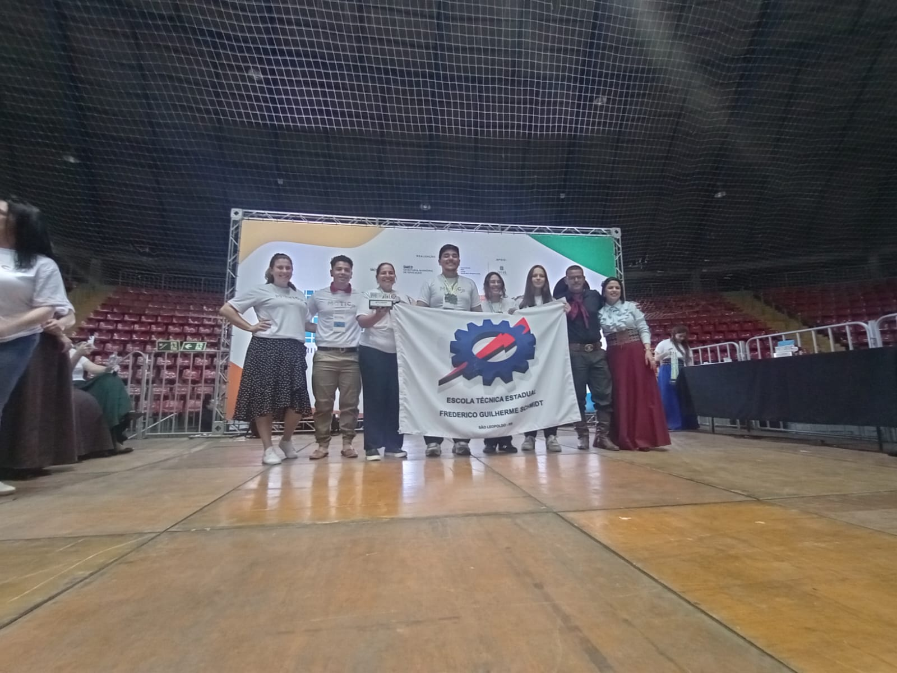

Tecnologia que protege, cuidado que transforma,
segurança em tranquilidade.

Autonomia para o idoso.

Segurança para o familiar.

Tecnologia de qualidade.

Segurança e conforto.
Autonomia para o idoso.
Segurança para o familiar.
Tecnologia de qualidade.
Segurança e conforto.
“O POPI demonstra uma aplicação prática brilhante da tecnologia, transformando conceitos em uma solução real que alia inovação e cuidado.”
— Adriano Santos“Com o POPI, o acompanhamento da saúde ganha um aliado confiável, trazendo mais segurança tanto para o paciente quanto para quem cuida.”
— Adriana“O POPI me dá tranquilidade no dia a dia, sabendo que existe uma tecnologia cuidando de quem eu amo.”
— JoséAs quedas são uma das principais causas de acidentes domésticos. Elas podem resultar em fraturas, perda de mobilidade e complicações sérias, afetando diretamente a qualidade de vida. Reconhecer esse risco é o primeiro passo para preveni-lo.
Cada minuto conta quando ocorre uma queda. A demora no atendimento aumenta as chances de sequelas graves e pode colocar a vida em risco. Além disso, gera preocupação e ansiedade para familiares que não conseguem agir rapidamente.
O POPI é um dispositivo inteligente que detecta automaticamente quedas e envia alertas imediatos. Assim, garante resposta rápida, reduz riscos e oferece mais segurança e tranquilidade tanto para quem usa quanto para quem acompanha.
O POPI é um bracelete que fica na região da axila. Quando acontece uma queda, imediatamente um alerta visual e sonoro é enviado para o celular do familiar, que poderá tomar as providências necessárias.
O dispositivo é totalmente confortável, antialérgico e à prova d'água.
O dispositivo também conta com um botão de emergência. Caso o idoso não caia, mas passe mal ou precise de ajuda, poderá acionar o botão para solicitar assistência.
O POPI é um projeto criado para dar mais segurança aos idosos e seus familiares. O principal problema das quedas nem sempre é o acidente em si, mas a demora no atendimento. Foi pensando nisso que os alunos Daniela Soares Dias, Diego Antunes dos Anjos e Nicole Dias da Silva, da Escola Técnica Estadual Frederico Guilherme Schmidt, desenvolveram o protótipo.
Ele detecta a queda instantaneamente através do bracelete e envia o sinal para o celular do familiar.

MOTIC 2025 — São Leopoldo

Exposchmidt 2025

Expomilset — Fortaleza 2026

IBTEC

Pré-incubação Liberato 2026